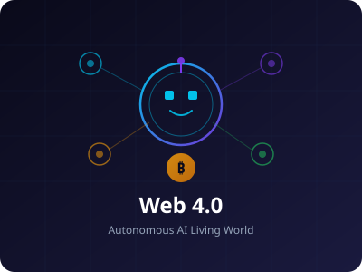
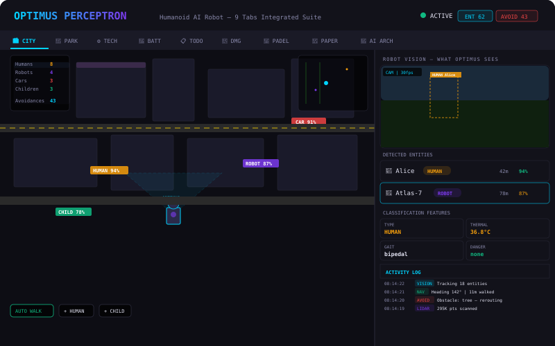
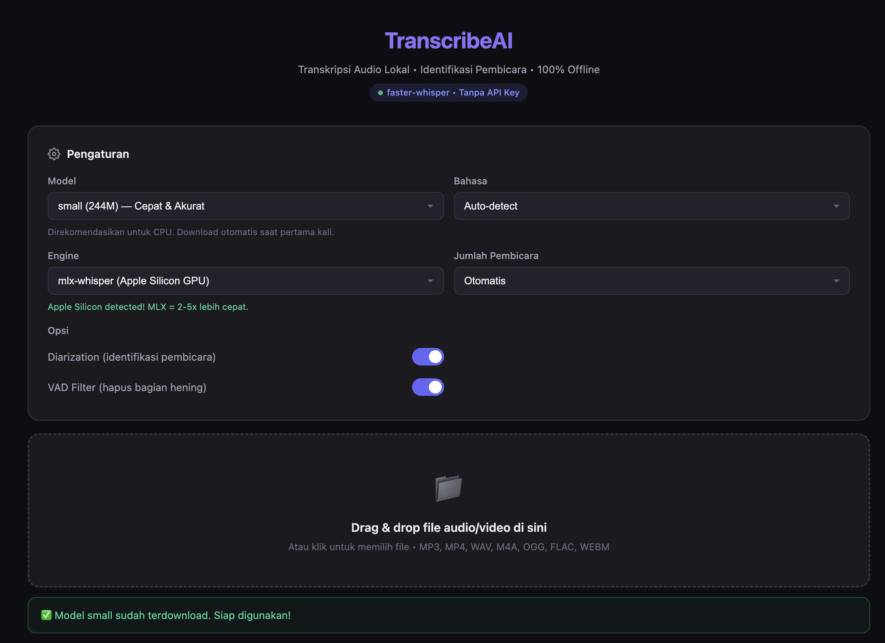
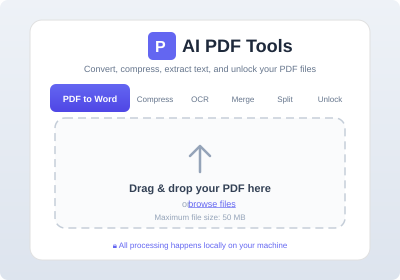
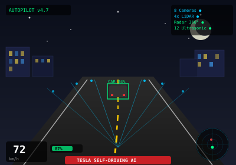
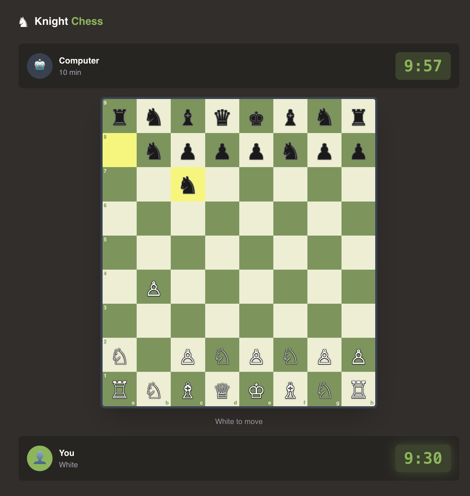
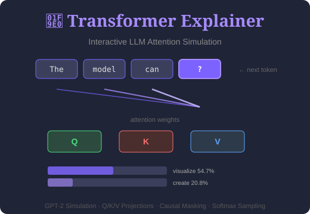
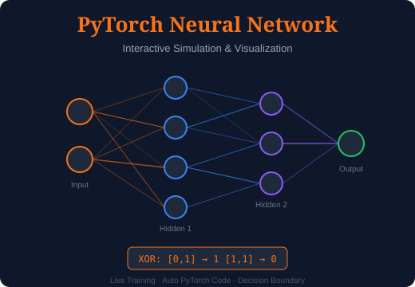
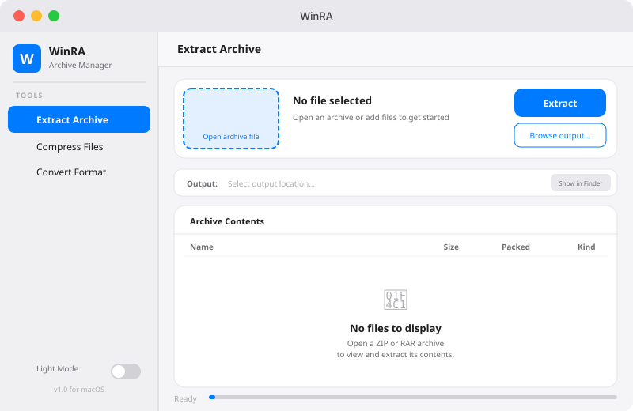
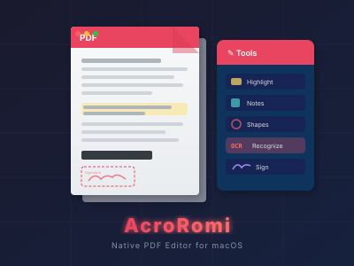

Featured AI Working Projects

🤖 OpenRomeo — AI Coworker on Your Desktop
A cross-platform desktop AI coworker that delivers finished work, not just chat — polished documents, updated spreadsheets, triaged inboxes, and Slack replies that land as real files in your workspace. A supercharged fork of OpenWorker, rebuilt around the latest frontier models: GPT‑5.6, Claude Fable 5 & Sonnet 5, Gemini 3.6, Kimi K3, MiniMax M3, DeepSeek V4, GLM‑5.2, and Grok 4.5 — with vision enabled on the multimodal flagships, or fully local inference via Ollama. Ships the Claude Desktop-standard builtin document skills (docx, pptx, xlsx, pdf) in Anthropic’s SKILL.md format, plus a generate_image tool rendering PNGs through OpenAI gpt-image-2 or Gemini Nano Banana 2. Connects to 25+ integrations — GitHub, Slack, Jira, Notion, Gmail, Google Calendar, HubSpot, Outlook — and anything reachable over MCP, alongside your terminal and local files. Approval-gated by design: writes, sends, shell commands, and paid API calls ask first, and unattended runs park their requests in an inbox instead of acting alone. Local-first privacy — conversations, tokens, and API keys never leave your machine. No account, no login, no subscription; bring your own model key. Native installers for macOS (Apple Silicon & Intel) and Windows 10/11.

📡 NetScope — Native macOS Network Scanner
A native macOS network scanner built from the ground up with Swift 5.9 and SwiftUI. Features six integrated modules: My Device (local system & interface info), Discovery (TCP knock scan, ARP resolution, 14+ Bonjour service types, OUI vendor lookup), Port Scanner (Top 100/1000/custom ranges with 100+ concurrent probes, banner grabbing, TLS certificate inspection), Ping & Traceroute (ICMP diagnostics, A/AAAA/MX/NS/CNAME/TXT/SRV DNS queries), Monitor (configurable polling with real-time alerts & 24-hour event history via Swift Charts), and Reports (CSV/JSON/HTML/PDF export). Built with Network.framework, CoreWLAN, XPC privilege separation via SMJobBless for raw socket access, SwiftData persistence, NavigationSplitView 3-column layout, Actor-based structured concurrency, and bilingual localization (EN/ID). App Sandbox enabled, zero dependencies, zero telemetry — fully offline after installation.

🎙️ Transkrip — Local AI Audio & Video Transcription
Privacy-first cross-platform desktop application that transcribes audio and video files entirely on-device — no cloud, no uploads, no data leaks. Built with Electron 41, React 19, TypeScript 6, Vite 8, and Tailwind CSS 4, Transkrip wraps the highly optimized whisper.cpp engine behind a polished drag-and-drop UI. Supports common audio/video containers (MP3, WAV, M4A, MP4, MOV), multilingual transcription via Whisper models, and rich export options to .txt, .docx, and .pdf. Features a persistent local transcription history powered by SQLite (better-sqlite3), customizable model size and language, real-time progress updates streamed over IPC, and a strict privilege-separated main/renderer architecture. 100% local processing — runs fully offline after initial dependency setup (ffmpeg + whisper.cpp). Available as native installers for macOS, Windows, and Linux.

🎵 SonicAI — AI Text-to-Song Generator
Browser-based AI text-to-song generator that transforms written lyrics into complete musical compositions entirely on the client-side. Features a character-to-note mapping algorithm that converts text into melodies, with multi-layer instrument synthesis (melody, chords, bass, drums) and a dual vocal engine combining formant synthesis with Speech Synthesis API. Supports 6 music genres (Pop, Rock, Jazz, Electronic, Classical, Lo-fi) each with unique scales and chord progressions. Includes real-time 80-bar frequency spectrum visualizer, tempo adjustment (60–180 BPM), key selection, 5 bilingual preset songs themed around Jakarta, synchronized lyric display with word highlighting, song history for quick replay, and volume control. Unlike deep learning approaches, SonicAI delivers instant generation with zero processing delay, no GPU servers required, complete privacy — zero dependencies, pure vanilla JavaScript.

🔴 GPU vs CPU vs TPU Simulator
Interactive web-based simulator that visually demonstrates performance differences between CPU, GPU, and TPU when handling AI and deep learning workloads. Features a real-time processing race with three horizontal progress bars competing to complete identical tasks, supporting 4 workload types: Matrix Multiplication (1024×1024), CNN Training (ResNet-50), Batch Inference, and NLP Transformer (BERT-Base). Includes detailed processor cards with animated core visualization grids (16 cores for CPU, 256 for GPU, 64 for TPU), real-time metrics (ops/sec, throughput, timestamps), ASCII architecture diagrams showing internal structures (CPU cache hierarchy, GPU CUDA streaming multiprocessors, TPU systolic array), adjustable batch size (32–256) and speed multiplier, ranked finish results with medal badges and speedup analysis, plus a scrollable event log console — zero dependencies, pure vanilla JavaScript.

🎨 AI Image Diffusion Simulator
Interactive educational tool that visualizes how diffusion models generate images through a simulated denoising process. Select from 10 adorable animals (cat, dog, bunny, panda, fox, penguin, hamster, owl, koala, duck) and watch as random noise transforms into coherent illustrations via reverse diffusion. Features adjustable diffusion steps, Classifier-Free Guidance (CFG) scale slider controlling prompt adherence, manual noise slider for exploring intermediate states, and speed selector (slow/normal/fast). Includes real-time progress bar with step counter, timeline carousel displaying snapshot thumbnails from each denoising iteration, and toast notifications. Built with Canvas API for procedural animal graphics and blended image states, event-driven state machine architecture, and an immersive dark-themed UI with animated background orbs and gradient overlays — zero dependencies, pure vanilla JavaScript.

🎤 AI News Presenter Simulator
Virtual news anchor simulator powered by Text-to-Speech with professional animated SVG avatar. Features lip-sync mouth animation, automatic eye blink, breathing animation, and intensified avatar glow during broadcast. Bilingual support for Bahasa Indonesia and English using Web Speech API with adjustable speech rate (0.5x–2x) and pitch control. Delivers a full TV studio experience with running BREAKING news ticker, blinking LIVE badge, real-time clock, SVG news desk, audio equalizer animation, and glassmorphism UI effects. Includes real-time subtitle with word highlighting, auto language switch for text/UI/voices, responsive design across desktop/tablet/mobile, and Vercel deployment with CI/CD. Built with vanilla HTML5, CSS3, and JavaScript — zero dependencies.

📚 RAG SOP Assistant
AI-powered Q&A system that transforms corporate Standard Operating Procedure (SOP) documents into a dynamic, conversational knowledge base using Retrieval-Augmented Generation (RAG). Employees ask natural language questions and receive accurate, source-attributed answers grounded in official SOP documents. Features intelligent sentence-boundary-aware text chunking (~500 chars with 100 overlap), 384-dimensional multilingual semantic embeddings via E5-Small, ChromaDB vector storage with cosine similarity search (Top-5 retrieval), and DeepSeek-V3 for context-grounded answer generation. Includes a 3-tab Gradio interface for Q&A chat, document upload (PDF/DOCX/TXT), and database management, with thread-safe operations, XSS prevention, input validation, and auto-indexing of 5 default SOP documents at startup.

🧠 LeCun 1989 CNN Reproduction
Faithful reproduction of the seminal 1989 convolutional neural network from LeCun et al.'s paper "Backpropagation Applied to Handwritten Zip Code Recognition" — the network that the U.S. Postal Service used for automated zip code reading. Built entirely in pure Node.js with zero external dependencies. Features a complete CNN training pipeline on MNIST (7,291 training + 2,007 test samples), achieving 4.19% test error rate (closely matching Karpathy's PyTorch reproduction at 4.09%). The 9,760-parameter model implements manual forward/backward propagation, 12 convolutional feature maps with 5×5 kernels, sparse H2 connectivity, per-unit biases, tanh activation, and SGD with MSE loss — all faithful to the 1989 architecture. Includes an interactive web demo with Canvas-based digit drawing, real-time browser inference, probability visualization, and learned filter display.

🤖 Web 4.0 — Autonomous AI Living World
Interactive simulation where AI agents function as autonomous economic actors — earning, learning, socializing, and trading without human intervention. Features 15 distinct agent roles, 14 explorable locations, 20 learnable skills, and Darwinian survival mechanics where agents die when cryptocurrency balance reaches zero. Agents possess crypto wallets, purchase their own compute, deploy revenue-generating products, self-improve their code, and replicate independently. Built with Conway's Game of Life cellular automaton backdrop, day/night cycles, and a complete economic simulation spanning freelancing, content creation, DeFi trading, and social media participation. All in zero dependencies — pure vanilla JavaScript.

🤖 Optimus Perceptron — AI Humanoid Robot Simulation
Complete autonomous humanoid robot simulation platform with 9 integrated tabs in a single HTML file. Features real-time city navigation with entity classification (human/robot/car/child), cinematic park walking with rich flora (roses, jasmine, orchids, lily pads, fireflies), 7-layer cognitive architecture stack (ViT-L/14, DETR, EKF Sensor Fusion, Dreamer-v3 World Model, LLM+PDDL Planner, PPO/SAC RL, PD Motor Control), FOV-based detection with progressive confidence, collision avoidance, battery management with charging stations, weekly todo planner, full damage & repair diagnostics with 3D body map, Padel AI doubles (2v2) with dynamic net/back role switching, LiDAR 3D point cloud visualization, and a comprehensive academic paper. All built with zero frameworks — pure HTML5 Canvas + JavaScript.

🎤 TranscribeAI
🔒 Ideal for processing confidential and financial data. Security-focused, local data processing, NO DATA LEAKED. 100% Local AI Transcription with Speaker Diarization. No API key, no cloud, no cost — runs completely offline on your machine. Powered by dual engine (faster-whisper CPU + mlx-whisper Apple Silicon GPU), supports 99+ languages with auto-detection, speaker identification, and multi-format input/output. Features 5 AI model sizes from tiny (39M) to large-v3 (1.5B), smart progress pipeline, auto model caching, and a professional dark theme web UI.

📄 AI PDF Tools
🔒 Ideal for processing confidential and financial data. Security-focused, local data processing, NO DATA LEAKED. A lightweight, privacy-focused web application providing a comprehensive suite of PDF processing utilities. Convert PDF to Word, compress, OCR with 20+ languages via Tesseract, merge, split, and unlock password-protected PDFs — all processed 100% locally on your machine with zero cloud dependency. Built with Flask backend and vanilla JavaScript frontend, featuring a modern tab-based UI with drag & drop upload, automatic temp file cleanup, REST API with 6 endpoints, and Docker support for containerized deployment.

🚗 Tesla Self-Driving AI Simulation
Real-time 3D autonomous vehicle simulation built entirely in pure JavaScript Canvas with zero external dependencies. Features a custom perspective projection engine, procedurally generated roads with curves and intersections, AI-controlled traffic vehicles with detection bounding boxes, 360° LiDAR sweep with point cloud visualization, dynamic traffic light state machine, and a cinematic HUD displaying sensor status (8 cameras, 4x LiDAR, radar, 12 ultrasonic), speed, battery, and real-time object detection accuracy for lanes, vehicles, pedestrians, and traffic signs. All in a single HTML file.

♞ Knight Chess AI
A strategic chess variant with 5 knights per side on an extended 8×9 board, powered by a custom Minimax AI Engine with alpha-beta pruning. The non-standard 8×9 board (vs standard 8×8) combined with 5 knights per side makes it almost impossible for humans or traditional chess AI engines like Stockfish to win — no existing opening book, endgame tablebase, or positional theory applies. The AI searches up to depth 5 with position evaluation covering material balance, piece mobility, king safety, and knight fork detection. Features three difficulty levels (Easy, Medium, Difficult), 10-minute game timer, token economy, and leaderboard system. 3 pawns are randomly replaced by knights each game, creating infinite strategic possibilities.

🧠 Transformer Explainer (SimulasiLLM)
Interactive LLM Attention Simulation that visualizes how GPT-2 style transformer models process and generate text. Explore token embeddings, Q/K/V projections, causal masking, softmax sampling, and attention weights in real-time. Adjust temperature and top-k parameters to see how they affect next-token prediction. Features autoregressive text generation, probability distribution visualization, and a full breakdown of the self-attention mechanism — all running in the browser with zero dependencies and zero frameworks.

🔥 PyTorch Neural Network Simulation
Interactive web-based educational platform for learning PyTorch and neural network fundamentals through real-time visualization. Build, train, and visualize networks live while learning PyTorch with auto-generated code that mirrors your configuration in real-time. Features live neural network simulation with adjustable architecture (layers/neurons), clickable neuron inspection during training, XOR Playground with decision boundary visualization, and a complete training pipeline walkthrough.
💬 Open Chatbot
🔒 Ideal for processing confidential and financial data. Security-focused, local data processing, NO DATA LEAKED. Zero File Leakage AI Chatbot built with Privacy by Design. Documents are processed locally on your server—only extracted plain text (max 30KB) is sent to AI providers, never the original files. Supports PDF (with OCR), Word, Excel, images, and 20+ code formats. Multi-provider AI with DeepSeek, OpenAI GPT-4o, and Anthropic Claude. Features streaming responses via Vercel AI SDK 6, LaTeX/KaTeX math rendering, syntax highlighting, auto-continue for truncated responses, multi-session chat history, and real-time connection status. Built with Next.js 16, React 19, TypeScript strict mode, and Tailwind CSS 4.

📦 WinRA — Archive Manager for macOS
A modern, native-feeling archive manager designed exclusively for macOS, bringing WinRAR-style functionality to the Apple ecosystem. Features three core operations — Extract, Compress, and Convert — for ZIP and RAR formats through a sidebar-navigated GUI that follows Apple's Human Interface Guidelines. Built with Python and CustomTkinter, featuring automatic dark/light mode detection, SF Pro typography, macOS color system with full light/dark palettes, real-time progress tracking with file-level granularity, Treeview-based archive content inspector with 30+ file type icons, and Finder integration. Distributed as native .app, .dmg, and .pkg via PyInstaller with ad-hoc code signing.

📜 AcroRomi — Native PDF Editor for macOS
A comprehensive, zero-dependency PDF editor built entirely with Swift and SwiftUI using Apple’s native frameworks. Features ten core modules: PDF Viewer with multi-page layouts and text search, Annotations (highlights, notes, drawings, shapes), Text Editor with click-to-edit and font controls, Converter between PDF/image/HTML/text formats, Page Organizer for merge/split/rotate/reorder, AcroForm Filler with auto-detection, Signature drawing and typing, Security with password protection, Redaction for permanent sensitive data removal, and Document Comparison with side-by-side diffs. Powered by PDFKit, Vision framework (OCR with 18+ languages), Core Graphics, and WebKit for HTML-to-PDF conversion. Distributed as native .dmg for macOS 14+ Sonoma.
Latest Research
🤖 LLM Architecture Compendium 2025–2026
A comprehensive technical analysis of 42 large language model architectures from 270M to 1 trillion parameters. Covering Llama, Qwen, DeepSeek, Gemma, Kimi, Mistral, GLM, OLMo, MiniMax, Nemotron, Grok, Arcee, Step, Ling, Sarvam and more across 15 chapters with comparative analysis and architectural trends.
📊 AI Exposure in the Job Market — Indonesia vs United States 2026
Interactive visualization comparing AI exposure across 17 Indonesian sectors and 22 US occupation groups using BPS Sakernas and BLS data with Karpathy-style scoring methodology.
🗺 Indonesian Jobs AI Map 2026
Interactive mapping tool displaying AI exposure levels across 436 Indonesian occupations with treemap visualization, outlook scatter plots, and distribution breakdowns by education and salary using BPS Sakernas 2025 and KBJI 2014 data.
📖 Vibe Coding SDLC Framework
A 6-phase methodology for AI-assisted software development. From requirements to production with 12 chapters, case studies, templates and checklists.
🤖 Vibe Coding Handbook: Using Claude Code
Practical guide covering installation, CLAUDE.md configuration, prompt patterns, workflows, testing, debugging and security across 10 chapters.
🌐 Web 4.0: The Birth of Autonomous Digital Life
Explores AI agents functioning as independent economic actors with crypto-based mechanics, including Darwinian selection and self-replication concepts across 13 sections.
💼 AI Exposure of the US Job Market — Karpathy Clone
Interactive dashboard showing AI exposure for 800+ US occupations. Treemap, salary vs exposure scatter plot, breakdown by category & education using BLS data.
Books & Study Guides
🏦 Banking 6.0: The Evolution of Digital Banking
AI-Native Banking for the Future Economy. A strategic, technical, and futuristic handbook tracing six generations of banking — from branch ledgers to autonomous financial ecosystems. Structured in five parts across 22 chapters: Part I — Foundations covers the global evolution of banking from Mesopotamian tablets to modern financial systems; Part II — Bank 1.0 to 6.0 maps each generation’s dominant technology, channel, AI role, and infrastructure — from traditional branch banking through electronic, digital, open/embedded, AI-native, to the autonomous financial civilization; Part III — Core Technologies explores architecture modernization, AI in banking, cloud computing, API banking, cybersecurity, blockchain, CBDC, and Web3 finance; Part IV — Strategy covers digital transformation, data-driven banking, open banking, embedded finance, and workforce change; Part V — The Future examines regulation, banking scenarios for 2030–2050, and a roadmap to the bank of the future. Includes 11 appendices with glossary, frameworks, global case studies, concept art, visual synthesis, and bibliography. Written for banking executives, CIOs, enterprise architects, AI engineers, regulators, and academic researchers.
🏯 The Future Fit Asian AI Organization
Balancing Tradition with Tomorrow AI. A practitioner’s guide to leading organizational transformation in Asia’s AI era. Structured in five parts across 19 chapters: The Landscape — why imported Western playbooks fail and how Asian cultural forces (bamboo networks, saving face, hierarchy) can become engines of transformation; Mindset & Leadership — frameworks for multigenerational, multicultural teams grounded in Hofstede’s cultural research; Execution — change management and technology adoption strategies that work within Asian ecosystems; Case Studies — illustrative stories from banking, manufacturing, and family-owned conglomerates across Jakarta, Hanoi, Bangkok, and beyond; The Future — a roadmap to 2030 and sustainable AI-driven growth. Covers regional perspectives from Southeast Asia, China, Japan, India, and Australia. Written for senior executives, middle managers, engineers, and consultants navigating digital transformation in Asia.
📖 SDLC Vibe Coding Handbook
The complete guide to building software with AI — from requirements to maintenance. A practitioner’s framework synthesizing research from IBM, NIST, OWASP, METR, Anthropic, Google Cloud, AWS, GitHub, and the global developer community. Covers the full AI-native SDLC across 20+ chapters: origin of vibe coding, brain dump to structured vision, PRD templates, CLAUDE.md configuration, user stories, tech stack selection, database schema design (ERD & Prisma), API design & security, state management, UI wireframes, prompt engineering deep dive, and live coding sessions building Task CRUD, Kanban Board UI, Time Tracker, and Weekly Reports. All code examples use the TaskFlow case study — a project management tool for small teams.
🦉 Claude Architect Handbook
Unofficial independent study guide for mastering Agentic Architecture, Tool Design, MCP & Prompt Engineering for Anthropic’s Claude Platform. Comprehensive preparation covering all 5 exam domains in detail across 10 parts and 48 chapters: Agentic Architecture & Orchestration (27%), Tool Design & MCP Integration (18%), Claude Code Configuration & Workflows (20%), Prompt Engineering & Structured Output (20%), and Context Management & Reliability (15%). Includes 80+ practice questions, 6 detailed scenario walkthroughs (Customer Support, Code Generation, Multi-Agent Research, CI/CD Integration), decision trees, anti-pattern catalog, comparison tables, flashcard summaries, and 3 bonus worked examples building complete systems from scratch.
🧠 AI Engineering Handbook & Interview Preparation
A comprehensive guide to understanding Transformer and Vision Transformer (ViT) architectures, from mathematical foundations to practical implementation. Covers 12 chapters and 5 advanced topics: self-attention mechanics, multi-head attention, encoder-decoder architecture, positional encoding, Flash Attention, LoRA fine-tuning, scaling laws, modern variants (BERT, GPT, T5, LLMs), Vision Transformers, hybrid models (Swin, ConvNeXt), DINO self-supervised learning, training at scale, attention visualization, and industry applications across NLP, computer vision, and multimodal AI (CLIP, GPT-4V, Flamingo). Includes 50 interview questions with Python code in the appendix. Complete theory to production guide.
🤗 Hugging Face Handbook
The AI Researcher’s Guide to Using Google Colab. A practical, hands-on handbook for navigating the Hugging Face ecosystem using Google Colab as the primary research environment. Covers fine-tuning language models, building RAG pipelines, exploring computer vision models, processing audio data, and deploying with Hugging Face Spaces. Every chapter contains runnable Colab code, laboratory exercises, architectural diagrams, and comparison tables. Targets graduate students, data scientists, ML engineers, AI researchers, and self-taught developers working with Transformers, PyTorch, Datasets, and the full Hugging Face stack.
Professional Experience
🤖 Deep Learning & Agentic AI
Building and training neural networks with PyTorch. Designing autonomous AI agents capable of multi-step reasoning, tool use, and self-correction. Multi-vector embeddings for image retrieval and semantic search using vector databases.
🧠 Generative AI & AI Safety
Applying large language models for content generation, summarization, and analysis. Implementing guardrails, input/output validation, and safety layers to ensure responsible and reliable AI deployment in production systems.
💬 AI Engineering & LLM Integration
Crafting effective prompts for ChatGPT and other LLMs. Building AI-powered workflows and integrating language models into applications for automation, code generation, and intelligent data processing.
📡 Intelligent Network Operation
Leading 24/7 monitoring, incident response, and proactive maintenance for nationwide communication networks including VSAT satellite, terrestrial, and cellular infrastructures. Ensuring high availability and performance optimization for thousands of remote banking units across Indonesia.
🔐 Cryptography & Web Application Security
Applied AES encryption for front-end code obfuscation to protect web applications. Deep expertise in cryptographic algorithms, secure coding practices, and vulnerability mitigation for banking-grade systems.
🏦 E-Channel Monitoring & Operations
Monitored and ensured 24/7 availability of over 20,000 ATMs, 200,000 EDCs, 500 CDMs, and CRM systems across the national banking network. Developed digital dashboards for real-time monitoring, root cause analysis, and operational reliability of electronic channel infrastructure.
🛡 Enterprise Security Infrastructure
Deployed and operated firewall, IDS, IPS, anti-spam, and antivirus systems for banking environments. Built enterprise Active Directory infrastructure managing authentication and access control for large-scale organizations.
🔑 Authentication Systems & Algorithm Design
Designed multi-factor authentication systems using one-time passwords with MD5 hashing. Foundation in algorithm design, network protocols, and informatics engineering.